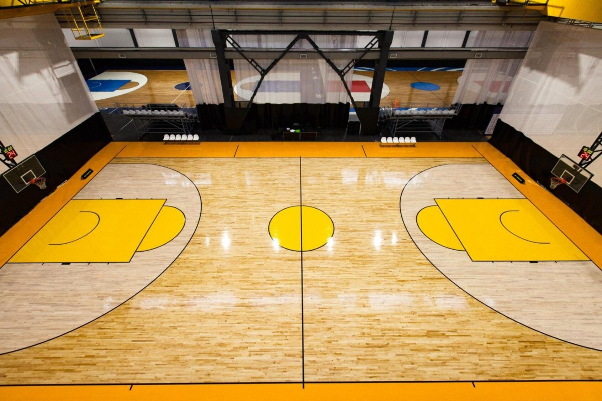

В баскетбол играют две команды. Обычно команда состоит из 12 человек, 5 из которых одновременно
находятся на площадке, а остальные располагаются на скамейке запасных и во время паузы в игре могут
выйти на замену
Ведение мяча в баскетболе. Спортсмены, которые владеют мячом, должны ударять им в пол. Без удара
в пол разрешается сделать только два шага. В противном случае фиксируется нарушение — «пронос мяча»,
мяч отдается другой команде.
Мячом играют только руками. Бежать с мячом, не ударяя им в пол, преднамеренно бить по нему ногой,
блокировать любой частью ноги или бить по нему кулаком запрещено. Случайное же соприкосновение или касание
мяча стопой или ногой не является нарушением.
Баскетбольный матч состоит из 4 четвертей или 2 таймов (в студенческом баскетболе). В Национальной
баскетбольной ассоциации матч состоит из 4 четвертей по 12 минут, а в ФИБА четверть состоит из 10 минут.
NCAA (студенческая ассоциация США) использует два тайма по 20 минут.
Между четвертями предусмотрены короткие перерывы, а между вторым и третьим периодом (либо каждым из таймов)
время перерыва увеличено.
При равном числе очков после основного времени назначается дополнительное время — овертайм. Количество
овертаймов не является ограниченным. Они играются до определения победителя встречи.
Точный бросок в корзину может отличаться по количеству набранных очков. Мяч, заброшенный во время
штрафного броска,приносит команде 1 очко. Если мяч заброшен со средней или близкой дистанции
(ближе 3-х очковой линии), то команде дается 2 очка. Три очка зарабатывает команда, если мяч заброшен
из-за трехочковой линии.
Интересный факт! Трехочковый бросок был включен в официальные правила игры (ФИБА) в 1984 году.
Трехочковая дуга выделяется на площадке: она находится на расстоянии 6 м 75 см от кольца для ФИБА и
7 м 24 см — в Национальной баскетбольной ассоциации

На баскетбольной площадке выделяется трехсекундная зона, где игрок атакующей команды не может
находиться более трех секунд